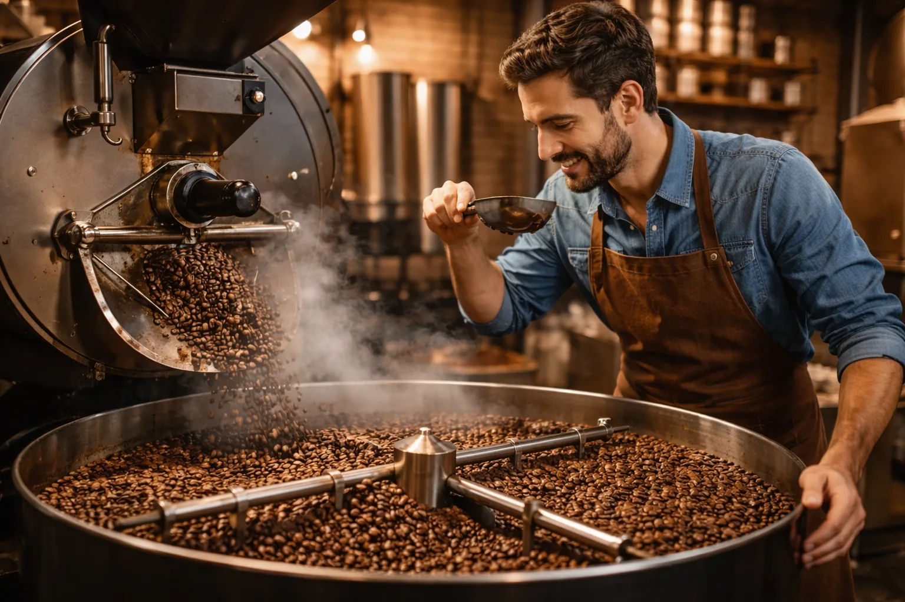

From Harvest
Our coffee begins long before it reaches your cup. Grown at high altitudes in rich volcanic soil, each bean is carefully cultivated by farmers who understand that quality starts at the root. The cherries are hand-picked at peak ripeness, ensuring only the best make the journey forward. It is slow work. Intentional work. The kind that respects the land as much as the final flavor.

Through Roasting
Roasting is where character is revealed. In small batches, we carefully control time and temperature to unlock the natural notes hidden inside every bean: chocolate, citrus, caramel, spice. It is part science, part instinct. Too little heat and the flavor stays asleep. Too much and it is lost forever. Precision matters. Patience matters more.